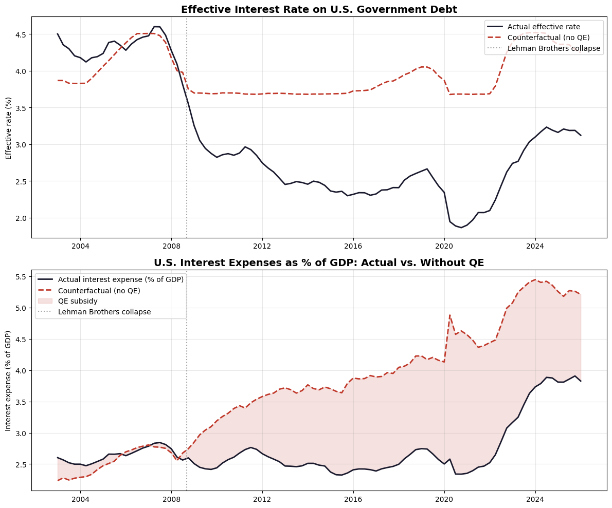

My understanding of the United States Dollar's position in the global economy today is informed by the events of two years: 1971 and 2008. In August of 1971, President Nixon suspended the convertibility of the dollar into gold, leading the global transition into a floating-rate fiat currency regime. In September of 2008, the bankruptcy of Lehman Brothers represented the peak of the Global Financial Crisis. These two events represent the start and end of the peak of the dollar regime backed by trust, power, and stability. The trust, power, and stability backing the American dollar have been continuously eroding ever since the traumatic events of 2008, and the consequences have become difficult to suppress in recent years. The purpose of this article is to review the pre-2008 dollar dominance, and examine the implications of that crisis on a global dollar in the long-run.
The period from 1971 to 2008 led the world to take for granted what "money" actually is. "Money" was the dollar, the dollar was "money", and veering away from this circular logic would have been futile and economically suicidal. The word 'dollar' gets its roots from the 16th century German language, where a silver mining Bohemian town (in modern-day Czechia) began minting 27.2-gram silver coins. The German word 'thaler', which led to the term 'dollar', means valley -- where the silver was mined. In the United States, the Coinage Act of 1792 set the value of a dollar at 24.06 grams of silver. The backing of the American dollar evolved continuously for centuries, and it was not until 1971 that it had no material backing whatsoever. It may seem counterintuitive that within several years after the dollar had forgone its material backing, it went on to become the strongest currency in the entire history of global economics for several decades. Thanks to coinciding tailwinds such as an increasingly unipolar world order (historians generally agree the USSR's power peaked no later than the 1970s), the tightest monetary policy in American history, and the evolution of the petrodollar, the stability afforded by precious metals was entirely redundant. For the remainder of the century, the cycle involved the American economy undergoing deindustrialization in favor of financialization, as the massive trade surpluses resulting from American imports would be recycled back into US Treasuries, thereby reinforcing the cycle that made imports more favourable for American consumers. This began after the Nixon administration successfully integrated China into the global financial system, and it didn't take long for them to absorb much of the manufacturing demand of the West. In the early stages of the dollar's golden age, this cycle was so excessive that it forced the hand of major Western economies to agree to the Plaza Accord -- a managed devaluation of the dollar. As such, economic growth in first-world countries transitioned from relying on the output of goods, to services and finance.
Growth throughout the couple of decades following deindustrialization was sustained at a reasonable rate largely thanks to the consistent increase in leverage and debt that the system relied on to remain stable. Hyman Minsky's understanding of long-term cyclicality -- that stability itself can become destabilizing through leverage and complacency -- played out perfectly throughout the period of the 1980s to 2008. This period had an incredible degree of monetary stability which may never be matched again, thanks to complete centralized control over the dollar and universal participation in that regime. Yields were falling continuously and predictably, and the stock market regained long-term strength after the 1970s stagflation had subsided. Minsky passed away in 1996, but his work predicted 2008 by suggesting that as times become prosperous for long enough, people's complacency leads them to believe that asset prices will continuously rise, which creates a system dependent on "Ponzi finance" (e.g. mortgage-backed securities). After the Global Financial Crisis of 2008 catalyzed by the leveraged American housing market, the dynamics of global economic power were forever changed.
The crisis of 2008 was the most powerful downturn since the Great Depression. A man who observed the Great Depression in close detail, and transformed the world because of his observations, was John Maynard Keynes -- the most influential economist of his century. When 2008 came around, monetary authorities had learned their lesson, stimulating the economy with both extreme monetary and fiscal measures as Keynes' teaching suggested. Brilliant as he was, I keep Keynes' "In the long run we are all dead" passage on the front page of this site for a reason -- the long run catches up eventually. In a rush to escape a second Great Depression, the Federal Reserve more than doubled the size of its balance sheet within just one year. By 2014, it had quadrupled. Observing the monetary authorities' response to the GFC in 2008 was the brilliant pseudonymous Satoshi Nakamoto. On January 3rd, 2009, Bitcoin entered the financial system -- a revolution whose significance will only be clear with much more hindsight than we have today. Observing their respective crises, Keynes and Nakamoto recognized that institutional authorities had failed their people, though for nearly polar opposite reasons. Nothing about Bitcoin's programming was arbitrary. Throughout Bitcoin's genesis, Satoshi was observing not only that currencies can be devalued at a moment's notice, but that mean reversion back toward sustainability may not be possible. In other words, just as the late-20th century strength of the dollar was a self-reinforcing cycle, the post-GFC debasement would behave similarly.

Data: FRED. Effective interest rate calculated as federal interest outlays divided by total public debt. Counterfactual rate estimated via OLS regression of the effective rate on the Fed balance sheet (% of GDP) and the federal funds rate, holding the balance sheet constant at its pre-crisis 2007 ratio (~6% of GDP). The model uses quarterly data from 2003 to present.
The estimation above ought to be taken with a grain of salt. Its purpose is to illustrate how short-term emergency measures have ended up feeding a beast whose appetite knows no limits. The federal reserve balance sheet was doubled from 2010 to 2014, despite the fact that the economic emergency had been over already. This encouraged the government to take on extreme deficits financed at artificially low rates. Since government debt was effectively no longer a free market during this period, it was unable to act as a check against fiscal irresponsibility. With yields artificially suppressed, the gluttony of government spending became so extreme that it nearly doubled the debt/GDP ratio within just seven years of the crisis. Even once GDP had recovered, the economy was still unsustainably engorged with monetary and fiscal excess. For context as to the extent of post-2008 deficits, there were only two periods since the turn of the century that debt/GDP expanded by >50% within a decade: the first was simply due to effective interest rates on government debt reaching double digits throughout the 1980s. The second was due to the extreme deficits of WWII. In other words, the only time the ratio rose as it did in 2008, despite sub-3% yields, was to fund the Second World War.

There are two possible interpretations of this: either the post-crisis economic state was so dire that a fiscal deficit on par with total war was the only option, or the (estimated) five trillion interest burden subsidy simply made reckless spending painless and easy to ignore. Regardless, the department of the treasury is no longer able to hide from this situation as it used to. Historically, one government has been happy to take on a concerning debt situation, and pass on a worse one to the next. Ever since 2022, with persistent inflation and yields back on the rise, it is effectively impossible to turn a blind eye to the government debt environment. In terms of the future for the United States dollar and its implications on their debt, I will refer the reader to a previous article U.S. Debt Trouble, and for the purposes of this article, it will hopefully suffice to point out that 2008 and its consequences forced the world, including Americans themselves, to reevaluate whether or not they could trust the dollar. Only a shock of its magnitude could make people question a status-quo that was untouchable throughout their lifetimes, and only a couple years into this post-QE environment, the results of this shock are just in the early stages of revealing themselves.